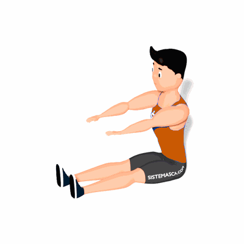

Spine Stretch

O exercício tem como objetivo mobilizar as vértebras, como também auxiliar na melhora da postura. Outro benefício é o alongamento dos músculos posteriores da coxa.
Ficha Técnica
Tipo: Pilates
Grupo Muscular: Costas
Aparelho: Nenhum
Músculos: Nenhum
Como realizar
- Inicie o exercício sentado com a coluna direita, pernas esticadas e afastadas ao nível da pélvis. Os braços devem estar esticados para a frente e alinhados com os ombros;
- De seguida, enrole a coluna para a frente em forma de C ao expirar, até esvaziar bem o peito e contrair cada vez mais o abdómen para dentro;
- Inspire e desenrole a coluna, uma vértebra de cada vez, e tenha a certeza de que a cabeça é a última a endireitar-se.
 RC STORE
RC STORE